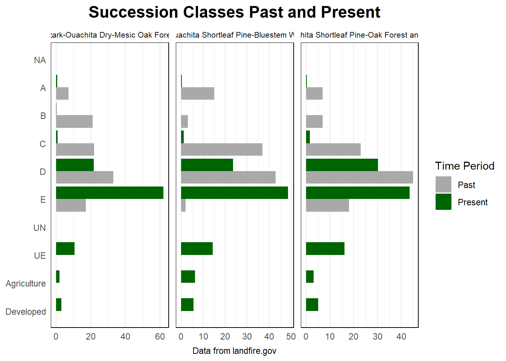

#setwd("C:/Users/Jmons/OneDrive/Documents/R-Class work/code_challenge/input_data")
#getwd
library(openxlsx)Warning: package 'openxlsx' was built under R version 4.3.3library(readxl)
library(ggplot2)Warning: package 'ggplot2' was built under R version 4.3.3library(tidyverse)── Attaching core tidyverse packages ──────────────────────── tidyverse 2.0.0 ──
✔ dplyr 1.1.4 ✔ readr 2.1.5
✔ forcats 1.0.0 ✔ stringr 1.5.1
✔ lubridate 1.9.3 ✔ tibble 3.2.1
✔ purrr 1.0.2 ✔ tidyr 1.3.1
── Conflicts ────────────────────────────────────────── tidyverse_conflicts() ──
✖ dplyr::filter() masks stats::filter()
✖ dplyr::lag() masks stats::lag()
ℹ Use the conflicted package (<http://conflicted.r-lib.org/>) to force all conflicts to become errorslibrary(dplyr)
#bps_aoi_attributes <- read_csv("C:/Users/Jmons/OneDrive/Documents/R-Class work/code_challenge/input_data/bps_aoi_attributes.csv")
#View(bps_aoi_attributes)
#bps_model_number_name <- read_csv("C:/Users/Jmons/OneDrive/Documents/R-Class work/code_challenge/input_data/bps_model_number_name.csv")
#bps_aoi_attributes[c()]
#View(bps_model_number_name)
#combine_raw <- read_csv("C:/Users/Jmons/OneDrive/Documents/R-Class work/code_challenge/input_data/combine_raw.csv")
#View(combine_raw)
#LF16_BPS_200 <- read_csv("C:/Users/Jmons/OneDrive/Documents/R-Class work/code_challenge/input_data/LF16_BPS_200.csv")
#View(LF16_BPS_200)
#ref_con_modified <- read_csv("C:/Users/Jmons/OneDrive/Documents/R-Class work/code_challenge/input_data/ref_con_modified.csv")
#View(ref_con_modified)
#scls_aoi_attributes <- read_csv("C:/Users/Jmons/OneDrive/Documents/R-Class work/code_challenge/input_data/scls_aoi_attributes.csv")
#View(scls_aoi_attributes)
#merge: this will show the past
#setwd("C:/Users/Jmons/OneDrive/Documents/R-Class work/code_challenge/input_data")
#getwd
bps_aoi_attributes <- read_csv("./data/bps_aoi_attributes.csv")New names:
Rows: 21 Columns: 24
── Column specification
──────────────────────────────────────────────────────── Delimiter: "," chr
(4): BPS_MODEL, BPS_NAME, GROUPVEG, FRG_NEW dbl (20): ...1, VALUE, Freq,
BPS_CODE, ZONE, FRI_REPLAC, FRI_MIXED, FRI_SURF...
ℹ Use `spec()` to retrieve the full column specification for this data. ℹ
Specify the column types or set `show_col_types = FALSE` to quiet this message.
• `` -> `...1`bps_model_number_name <- read_csv("./data/bps_model_number_name.csv")Rows: 819 Columns: 2
── Column specification ────────────────────────────────────────────────────────
Delimiter: ","
chr (2): BpS_Name, Model_Code
ℹ Use `spec()` to retrieve the full column specification for this data.
ℹ Specify the column types or set `show_col_types = FALSE` to quiet this message.combine_raw <- read_csv("./data/combine_raw.csv")New names:
Rows: 146 Columns: 4
── Column specification
──────────────────────────────────────────────────────── Delimiter: "," dbl
(4): ...1, Var1, Var2, Freq
ℹ Use `spec()` to retrieve the full column specification for this data. ℹ
Specify the column types or set `show_col_types = FALSE` to quiet this message.
• `` -> `...1`LF16_BPS_200 <- read_csv("./data/LF16_BPS_200.csv")Rows: 1770 Columns: 20
── Column specification ────────────────────────────────────────────────────────
Delimiter: ","
chr (4): BPS_MODEL, BPS_NAME, GROUPVEG, FRG_NEW
dbl (16): VALUE, BPS_CODE, ZONE, FRI_REPLAC, FRI_MIXED, FRI_SURFAC, FRI_ALLF...
ℹ Use `spec()` to retrieve the full column specification for this data.
ℹ Specify the column types or set `show_col_types = FALSE` to quiet this message.ref_con_modified <- read_csv("./data/ref_con_modified.csv")Rows: 819 Columns: 11
── Column specification ────────────────────────────────────────────────────────
Delimiter: ","
chr (1): Model_Code
dbl (10): A, B, C, D, E, Agriculture, Developed, Water, UN, UE
ℹ Use `spec()` to retrieve the full column specification for this data.
ℹ Specify the column types or set `show_col_types = FALSE` to quiet this message.scls_aoi_attributes <- read_csv("./data/scls_aoi_attributes.csv")New names:
Rows: 11 Columns: 13
── Column specification
──────────────────────────────────────────────────────── Delimiter: "," chr
(2): LABEL, DESCRIPTION dbl (11): ...1, VALUE, Freq, R, G, B, RED, GREEN, BLUE,
ACRES, REL_PERCENT
ℹ Use `spec()` to retrieve the full column specification for this data. ℹ
Specify the column types or set `show_col_types = FALSE` to quiet this message.
• `` -> `...1`merge1 <- merge(ref_con_modified, bps_model_number_name, by = "Model_Code", all = TRUE)
#what do i have to filter?
merge1keep <- c("13040_32_43_44_49", "13670_32_44","15070_44")
#now lets start filtering
merg1filtered <- merge1 %>%
filter(Model_Code %in% merge1keep) %>%
select(-Water)
# Convert from wide to long format
long_datamerg1 <- pivot_longer(
merg1filtered,
cols = A:UE,
names_to = "Category",
values_to = "PastPercent"
)
## Making the Graph
# Define the order of categories from bottom to top as they should appear after coord_flip()
ordered_categories <- c("Developed","Agriculture", "UE", "UN", "E", "D", "C", "B", "A")
# Set the factor levels for Category
long_datamerg1$Category <- factor(long_datamerg1$Category, levels = ordered_categories)
# Now create the plot
plot <- ggplot(long_datamerg1, aes(x = Category, y = PastPercent, fill = BpS_Name)) +
geom_bar(stat = "identity", position = position_dodge(), fill = "green") +
coord_flip() + # Flip the coordinates to have the categories on the y-axis
facet_wrap(~ BpS_Name, scales = "free_x") +
labs(
title = "Succession Classes past",
x = "Category",
y = "Past Percent"
) +
theme_minimal() +
theme(
legend.position = "bottom",
strip.text.x = element_text(size = 10),
panel.border = element_rect(colour = "black", fill = NA, size = 1.5),
strip.background = element_blank(),
panel.spacing = unit(0, "lines")
)Warning: The `size` argument of `element_rect()` is deprecated as of ggplot2 3.4.0.
ℹ Please use the `linewidth` argument instead.print(plot)#making present merge STILL NEED TO DO
# Correcting the merge code
# Checking column names of both data frames
library(data.table)
Attaching package: 'data.table'
The following objects are masked from 'package:lubridate':
hour, isoweek, mday, minute, month, quarter, second, wday, week,
yday, year
The following objects are masked from 'package:dplyr':
between, first, last
The following object is masked from 'package:purrr':
transposecombine_raw <- fread("./data/combine_raw.csv", select = c("V1", "Var1", "Var2", "Freq")) # Selecting only required columns)
scls_aoi_attributes <- fread("./data/scls_aoi_attributes.csv", select = c("VALUE", "LABEL", "DESCRIPTION")) # Selecting only required columns)
print(colnames(combine_raw))[1] "V1" "Var1" "Var2" "Freq"print(colnames(scls_aoi_attributes))[1] "VALUE" "LABEL" "DESCRIPTION"# Merge the data frames based on 'Var2' of combine_raw and 'VALUE' of scls_aoi_attributes
merge2 <- merge(combine_raw, scls_aoi_attributes, by.x = "Var2", by.y = "VALUE", all = TRUE)
merge2<- merge2[, .(V1, Var1, Var2, Freq, LABEL, DESCRIPTION)]
# View the result
print(head(merge2))Key: <Var2>
V1 Var1 Var2 Freq LABEL DESCRIPTION
<int> <int> <int> <int> <char> <char>
1: 3 2132 1 15903 A Succession Class A
2: 4 2136 1 96 A Succession Class A
3: 5 2138 1 98 A Succession Class A
4: 6 2139 1 3545 A Succession Class A
5: 7 2140 1 7406 A Succession Class A
6: 8 2141 1 8560 A Succession Class Abps_aoi_attributes <- fread("./data/bps_aoi_attributes.csv")
print(colnames(bps_aoi_attributes)) [1] "V1" "VALUE" "Freq" "BPS_CODE" "ZONE"
[6] "BPS_MODEL" "BPS_NAME" "GROUPVEG" "FRI_REPLAC" "FRI_MIXED"
[11] "FRI_SURFAC" "FRI_ALLFIR" "PRC_REPLAC" "PRC_MIXED" "PRC_SURFAC"
[16] "FRG_NEW" "R" "G" "B" "RED"
[21] "GREEN" "BLUE" "ACRES" "REL_PERCENT"bps_aoi_attributes[, VALUE := as.character(VALUE)]
merge2[, Var1 := as.character(Var1)]
final_merge2 <- merge(merge2, bps_aoi_attributes, by.x = "Var1", by.y = "VALUE", all.x = TRUE)
setnames(final_merge2, "Freq.x", "Freq.C")
setnames(final_merge2, "Freq.y", "Freq.BA")
final_merge2[, c("V1.y") := NULL] # Remove V1.y
setnames(final_merge2, "V1.x", "V1") # Rename V1.x to V1
# Move V1 to be the first column
setcolorder(final_merge2, c("V1", setdiff(names(final_merge2), "V1")))
# View the first few rows of the final data frame to verify changes
print(head(final_merge2))Key: <Var1>
V1 Var1 Var2 Freq.C LABEL DESCRIPTION Freq.BA BPS_CODE ZONE
<int> <char> <int> <int> <char> <char> <int> <int> <int>
1: 148 11 111 286406 Water Water 286406 11 NA
2: 3 2132 1 15903 A Succession Class A 2996479 13040 44
3: 24 2132 2 205 B Succession Class B 2996479 13040 44
4: 45 2132 3 21820 C Succession Class C 2996479 13040 44
5: 66 2132 4 647588 D Succession Class D 2996479 13040 44
6: 87 2132 5 1854930 E Succession Class E 2996479 13040 44
BPS_MODEL BPS_NAME GROUPVEG FRI_REPLAC
<char> <char> <char> <int>
1: <NA> Open Water Open Water NA
2: 13040_32_43_44_49 Ozark-Ouachita Dry-Mesic Oak Forest Hardwood 188
3: 13040_32_43_44_49 Ozark-Ouachita Dry-Mesic Oak Forest Hardwood 188
4: 13040_32_43_44_49 Ozark-Ouachita Dry-Mesic Oak Forest Hardwood 188
5: 13040_32_43_44_49 Ozark-Ouachita Dry-Mesic Oak Forest Hardwood 188
6: 13040_32_43_44_49 Ozark-Ouachita Dry-Mesic Oak Forest Hardwood 188
FRI_MIXED FRI_SURFAC FRI_ALLFIR PRC_REPLAC PRC_MIXED PRC_SURFAC FRG_NEW
<int> <int> <int> <int> <int> <int> <char>
1: NA NA NA NA NA NA <NA>
2: 66 15 11 6 17 77 I-B
3: 66 15 11 6 17 77 I-B
4: 66 15 11 6 17 77 I-B
5: 66 15 11 6 17 77 I-B
6: 66 15 11 6 17 77 I-B
R G B RED GREEN BLUE ACRES REL_PERCENT
<int> <int> <int> <num> <num> <num> <int> <num>
1: 0 0 255 0.0000000 0.0000000 1 63695 2.3
2: 115 115 0 0.4509804 0.4509804 0 666401 24.4
3: 115 115 0 0.4509804 0.4509804 0 666401 24.4
4: 115 115 0 0.4509804 0.4509804 0 666401 24.4
5: 115 115 0 0.4509804 0.4509804 0 666401 24.4
6: 115 115 0 0.4509804 0.4509804 0 666401 24.4final_merge2_processed <- final_merge2 %>%
group_by(Var1) %>% # Group data by Var1
mutate(total_sum = sum(Freq.C), # Calculate the total sum of Freq.C for each group
percent = 100 * Freq.C / total_sum) %>% # Calculate the percentage of each Freq.C in its group
ungroup() # Ungroup data frame after calculation
# View the first few rows to verify the changes
print(head(final_merge2_processed))# A tibble: 6 × 30
V1 Var1 Var2 Freq.C LABEL DESCRIPTION Freq.BA BPS_CODE ZONE BPS_MODEL
<int> <chr> <int> <int> <chr> <chr> <int> <int> <int> <chr>
1 148 11 111 286406 Water Water 286406 11 NA <NA>
2 3 2132 1 15903 A Succession C… 2996479 13040 44 13040_32…
3 24 2132 2 205 B Succession C… 2996479 13040 44 13040_32…
4 45 2132 3 21820 C Succession C… 2996479 13040 44 13040_32…
5 66 2132 4 647588 D Succession C… 2996479 13040 44 13040_32…
6 87 2132 5 1854930 E Succession C… 2996479 13040 44 13040_32…
# ℹ 20 more variables: BPS_NAME <chr>, GROUPVEG <chr>, FRI_REPLAC <int>,
# FRI_MIXED <int>, FRI_SURFAC <int>, FRI_ALLFIR <int>, PRC_REPLAC <int>,
# PRC_MIXED <int>, PRC_SURFAC <int>, FRG_NEW <chr>, R <int>, G <int>,
# B <int>, RED <dbl>, GREEN <dbl>, BLUE <dbl>, ACRES <int>,
# REL_PERCENT <dbl>, total_sum <int>, percent <dbl>library(dplyr)
# First, rename the columns in both data frames so that they match
long_datamerg1 <- long_datamerg1 %>%
rename(BpS_Name = BpS_Name, # Replace with actual column names if they are different
Model_Code = Model_Code,
Category = Category)
final_merge2_processed <- final_merge2_processed %>%
rename(BpS_Name = BPS_NAME, # Replace with actual column names if they are different
Model_Code = BPS_MODEL,
Category = LABEL)
# Now that the column names match, bind the rows together
long_data_combined <- bind_rows(
long_datamerg1 %>% mutate(TimePeriod = "Past"),
final_merge2_processed %>% mutate(TimePeriod = "Present")
)
# Check if there are any NA values that need to be addressed
summary(long_data_combined) Model_Code BpS_Name Category PastPercent
Length:173 Length:173 Length:173 Min. : 0.00
Class :character Class :character Class :character 1st Qu.: 0.00
Mode :character Mode :character Mode :character Median : 3.00
Mean :11.11
3rd Qu.:19.50
Max. :45.00
NA's :146
TimePeriod V1 Var1 Var2
Length:173 Min. : 3.00 Length:173 Min. : 1.00
Class :character 1st Qu.: 45.25 Class :character 1st Qu.: 3.00
Mode :character Median : 92.50 Mode :character Median : 5.00
Mean :110.38 Mean : 50.37
3rd Qu.:180.75 3rd Qu.:120.00
Max. :231.00 Max. :180.00
NA's :27 NA's :27
Freq.C DESCRIPTION Freq.BA BPS_CODE
Min. : 2.0 Length:173 Min. : 110 Min. : 11
1st Qu.: 343.8 Class :character 1st Qu.: 23905 1st Qu.:13640
Median : 4082.5 Mode :character Median : 57169 Median :14151
Mean : 84087.0 Mean : 719198 Mean :13910
3rd Qu.: 27449.5 3rd Qu.: 530667 3rd Qu.:14738
Max. :1854930.0 Max. :3130351 Max. :15070
NA's :27 NA's :27 NA's :27
ZONE GROUPVEG FRI_REPLAC FRI_MIXED
Min. :44 Length:173 Min. : 2.0 Min. : 7.0
1st Qu.:44 Class :character 1st Qu.: 96.0 1st Qu.: 66.0
Median :44 Mode :character Median : 179.0 Median : 92.0
Mean :44 Mean : 275.8 Mean : 204.3
3rd Qu.:44 3rd Qu.: 323.8 3rd Qu.: 130.0
Max. :44 Max. :1280.0 Max. :1223.0
NA's :29 NA's :29 NA's :48
FRI_SURFAC FRI_ALLFIR PRC_REPLAC PRC_MIXED
Min. : 2.0 Min. : 2.00 Min. : 1.00 Min. : 1.00
1st Qu.: 5.0 1st Qu.: 4.00 1st Qu.: 3.00 1st Qu.: 5.00
Median : 7.0 Median : 5.00 Median : 6.50 Median : 9.00
Mean : 52.3 Mean : 32.15 Mean : 17.07 Mean :12.85
3rd Qu.: 25.0 3rd Qu.: 19.00 3rd Qu.: 13.00 3rd Qu.:18.00
Max. :685.0 Max. :410.00 Max. :100.00 Max. :52.00
NA's :36 NA's :29 NA's :29 NA's :48
PRC_SURFAC FRG_NEW R G
Min. :17.00 Length:173 Min. : 0.0 Min. : 0.0
1st Qu.:70.00 Class :character 1st Qu.: 68.0 1st Qu.:115.0
Median :77.00 Mode :character Median :102.0 Median :138.0
Mean :75.45 Mean :129.2 Mean :138.8
3rd Qu.:87.00 3rd Qu.:196.0 3rd Qu.:168.0
Max. :97.00 Max. :255.0 Max. :237.0
NA's :36 NA's :27 NA's :27
B RED GREEN BLUE
Min. : 0.00 Min. :0.0000 Min. :0.0000 Min. :0.0000
1st Qu.: 0.00 1st Qu.:0.2667 1st Qu.:0.4510 1st Qu.:0.0000
Median :100.00 Median :0.4000 Median :0.5412 Median :0.3922
Mean : 93.45 Mean :0.5066 Mean :0.5445 Mean :0.3665
3rd Qu.:170.00 3rd Qu.:0.7686 3rd Qu.:0.6588 3rd Qu.:0.6667
Max. :255.00 Max. :1.0000 Max. :0.9294 Max. :1.0000
NA's :27 NA's :27 NA's :27 NA's :27
ACRES REL_PERCENT total_sum percent
Min. : 24 Min. : 0.000 Min. : 110 Min. : 0.00048
1st Qu.: 5316 1st Qu.: 0.200 1st Qu.: 23905 1st Qu.: 0.83212
Median : 12714 Median : 0.500 Median : 57169 Median : 6.05461
Mean :159946 Mean : 5.855 Mean : 719198 Mean : 14.38356
3rd Qu.:118017 3rd Qu.: 4.300 3rd Qu.: 530667 3rd Qu.: 20.78970
Max. :696173 Max. :25.500 Max. :3130351 Max. :100.00000
NA's :27 NA's :27 NA's :27 NA's :27 library(dplyr)
# make sure that the columns are correctly named and structured
long_datamerg1 <- long_datamerg1 %>%
rename(Percent = PastPercent)
final_merge2_processed <- final_merge2_processed %>%
rename(Percent = percent)
# bind the rows together
long_data_combined <- bind_rows(
long_datamerg1 %>% mutate(TimePeriod = "Past"),
final_merge2_processed %>% mutate(TimePeriod = "Present")
)
long_data_combined <- long_data_combined %>%
mutate(Percent = coalesce(Percent, 0)) # This replaces NA with 0, if that's the desired behavior
# Verify the structure and contents of the combined data
print(head(long_data_combined))# A tibble: 6 × 31
Model_Code BpS_Name Category Percent TimePeriod V1 Var1 Var2 Freq.C
<chr> <chr> <chr> <dbl> <chr> <int> <chr> <int> <int>
1 13040_32_43_44_… Ozark-O… A 7 Past NA <NA> NA NA
2 13040_32_43_44_… Ozark-O… B 21 Past NA <NA> NA NA
3 13040_32_43_44_… Ozark-O… C 22 Past NA <NA> NA NA
4 13040_32_43_44_… Ozark-O… D 33 Past NA <NA> NA NA
5 13040_32_43_44_… Ozark-O… E 17 Past NA <NA> NA NA
6 13040_32_43_44_… Ozark-O… Agricul… 0 Past NA <NA> NA NA
# ℹ 22 more variables: DESCRIPTION <chr>, Freq.BA <int>, BPS_CODE <int>,
# ZONE <int>, GROUPVEG <chr>, FRI_REPLAC <int>, FRI_MIXED <int>,
# FRI_SURFAC <int>, FRI_ALLFIR <int>, PRC_REPLAC <int>, PRC_MIXED <int>,
# PRC_SURFAC <int>, FRG_NEW <chr>, R <int>, G <int>, B <int>, RED <dbl>,
# GREEN <dbl>, BLUE <dbl>, ACRES <int>, REL_PERCENT <dbl>, total_sum <int>summary(long_data_combined) Model_Code BpS_Name Category Percent
Length:173 Length:173 Length:173 Min. : 0.0000
Class :character Class :character Class :character 1st Qu.: 0.5647
Mode :character Mode :character Mode :character Median : 5.9050
Mean : 13.8728
3rd Qu.: 20.8537
Max. :100.0000
TimePeriod V1 Var1 Var2
Length:173 Min. : 3.00 Length:173 Min. : 1.00
Class :character 1st Qu.: 45.25 Class :character 1st Qu.: 3.00
Mode :character Median : 92.50 Mode :character Median : 5.00
Mean :110.38 Mean : 50.37
3rd Qu.:180.75 3rd Qu.:120.00
Max. :231.00 Max. :180.00
NA's :27 NA's :27
Freq.C DESCRIPTION Freq.BA BPS_CODE
Min. : 2.0 Length:173 Min. : 110 Min. : 11
1st Qu.: 343.8 Class :character 1st Qu.: 23905 1st Qu.:13640
Median : 4082.5 Mode :character Median : 57169 Median :14151
Mean : 84087.0 Mean : 719198 Mean :13910
3rd Qu.: 27449.5 3rd Qu.: 530667 3rd Qu.:14738
Max. :1854930.0 Max. :3130351 Max. :15070
NA's :27 NA's :27 NA's :27
ZONE GROUPVEG FRI_REPLAC FRI_MIXED
Min. :44 Length:173 Min. : 2.0 Min. : 7.0
1st Qu.:44 Class :character 1st Qu.: 96.0 1st Qu.: 66.0
Median :44 Mode :character Median : 179.0 Median : 92.0
Mean :44 Mean : 275.8 Mean : 204.3
3rd Qu.:44 3rd Qu.: 323.8 3rd Qu.: 130.0
Max. :44 Max. :1280.0 Max. :1223.0
NA's :29 NA's :29 NA's :48
FRI_SURFAC FRI_ALLFIR PRC_REPLAC PRC_MIXED
Min. : 2.0 Min. : 2.00 Min. : 1.00 Min. : 1.00
1st Qu.: 5.0 1st Qu.: 4.00 1st Qu.: 3.00 1st Qu.: 5.00
Median : 7.0 Median : 5.00 Median : 6.50 Median : 9.00
Mean : 52.3 Mean : 32.15 Mean : 17.07 Mean :12.85
3rd Qu.: 25.0 3rd Qu.: 19.00 3rd Qu.: 13.00 3rd Qu.:18.00
Max. :685.0 Max. :410.00 Max. :100.00 Max. :52.00
NA's :36 NA's :29 NA's :29 NA's :48
PRC_SURFAC FRG_NEW R G
Min. :17.00 Length:173 Min. : 0.0 Min. : 0.0
1st Qu.:70.00 Class :character 1st Qu.: 68.0 1st Qu.:115.0
Median :77.00 Mode :character Median :102.0 Median :138.0
Mean :75.45 Mean :129.2 Mean :138.8
3rd Qu.:87.00 3rd Qu.:196.0 3rd Qu.:168.0
Max. :97.00 Max. :255.0 Max. :237.0
NA's :36 NA's :27 NA's :27
B RED GREEN BLUE
Min. : 0.00 Min. :0.0000 Min. :0.0000 Min. :0.0000
1st Qu.: 0.00 1st Qu.:0.2667 1st Qu.:0.4510 1st Qu.:0.0000
Median :100.00 Median :0.4000 Median :0.5412 Median :0.3922
Mean : 93.45 Mean :0.5066 Mean :0.5445 Mean :0.3665
3rd Qu.:170.00 3rd Qu.:0.7686 3rd Qu.:0.6588 3rd Qu.:0.6667
Max. :255.00 Max. :1.0000 Max. :0.9294 Max. :1.0000
NA's :27 NA's :27 NA's :27 NA's :27
ACRES REL_PERCENT total_sum
Min. : 24 Min. : 0.000 Min. : 110
1st Qu.: 5316 1st Qu.: 0.200 1st Qu.: 23905
Median : 12714 Median : 0.500 Median : 57169
Mean :159946 Mean : 5.855 Mean : 719198
3rd Qu.:118017 3rd Qu.: 4.300 3rd Qu.: 530667
Max. :696173 Max. :25.500 Max. :3130351
NA's :27 NA's :27 NA's :27 # Check the column names for both data frames
names(long_datamerg1)[1] "Model_Code" "BpS_Name" "Category" "Percent" names(final_merge2_processed) [1] "V1" "Var1" "Var2" "Freq.C" "Category"
[6] "DESCRIPTION" "Freq.BA" "BPS_CODE" "ZONE" "Model_Code"
[11] "BpS_Name" "GROUPVEG" "FRI_REPLAC" "FRI_MIXED" "FRI_SURFAC"
[16] "FRI_ALLFIR" "PRC_REPLAC" "PRC_MIXED" "PRC_SURFAC" "FRG_NEW"
[21] "R" "G" "B" "RED" "GREEN"
[26] "BLUE" "ACRES" "REL_PERCENT" "total_sum" "Percent" ##MAKING THE COMBINED GRAPH
library(ggplot2)
library(dplyr)
library(forcats)
library(readr)
###########################################################################################################################
long_data_combined <- long_data_combined %>%
filter(Category != "Water")
# Define the order of categories from bottom to top as they should appear after coord_flip()
ordered_categories <- c("Developed", "Agriculture", "UE", "UN", "E", "D", "C", "B", "A")
# Set the factor levels for Category
long_data_combined$Category <- factor(long_data_combined$Category, levels = ordered_categories)
# Define the three BpS names you want to keep
selected_bps_names <- c("Ozark-Ouachita Dry-Mesic Oak Forest",
"Ozark-Ouachita Shortleaf Pine-Bluestem Woodland",
"Ozark-Ouachita Shortleaf Pine-Oak Forest and Woodland")
# Filter the combined dataset for only the selected BpS names
long_data_selected <- long_data_combined %>%
filter(BpS_Name %in% selected_bps_names)
# Set the factor levels for BpS_Name and Category to control the plot order
long_data_selected$BpS_Name <- factor(long_data_selected$BpS_Name, levels = selected_bps_names)
long_data_selected$Category <- factor(long_data_selected$Category, levels = ordered_categories)
# Create the plot
plot <- ggplot(long_data_selected, aes(x = Category, y = Percent, fill = TimePeriod)) +
geom_bar(stat = "identity", position = position_dodge(width = 0.9)) +
coord_flip() +
facet_wrap(~ BpS_Name, scales = "free_x", strip.position = "top") +
scale_fill_manual(values = c("Past" = "darkgrey", "Present" = "darkgreen")) +
theme_minimal() +
theme(
legend.position = "right",
strip.placement = "outside",
strip.text.x = element_text(size = 8, hjust = 0.5),
axis.text.y = element_text(hjust = 1),
axis.title.y = element_blank(),
axis.title.x = element_blank(),
axis.ticks.y = element_blank(),
plot.title = element_text(size = 16, face = "bold", hjust = 0.5),
plot.caption = element_text(hjust = 0.5),
panel.grid.major.y = element_blank(),
panel.grid.minor.y = element_blank(),
panel.border = element_rect(color = "black", fill = NA),
strip.background = element_blank(),
panel.spacing = unit(0.5, "lines")
) +
labs(
title = "Succession Classes Past and Present",
x = "Percent",
y = "",
caption = "Data from landfire.gov",
fill = "Time Period"
) +
guides(fill = guide_legend(title.position = "top", title.hjust = 0.5))
# Print the plot
print(plot)